01
Lorne Commercial Assembly & Fine Gemstone Work
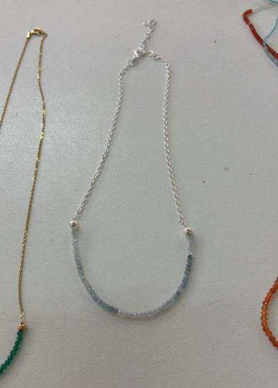
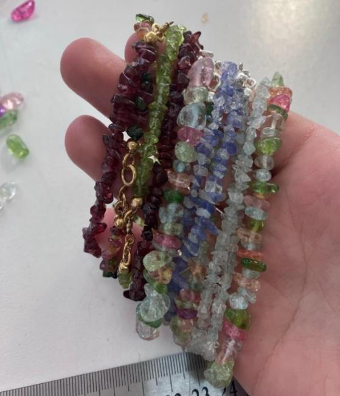
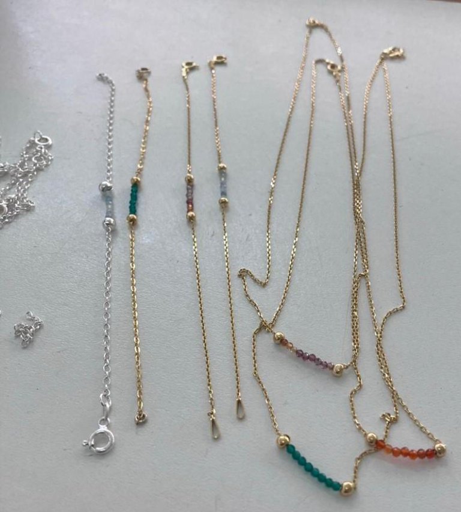
Aspiring goldsmith · Bench jeweller
Taryn Wilson is a developing goldsmith and bench jeweller with three years of practical workshop experience at Mervis Brothers Jewellers.
View résumé ↗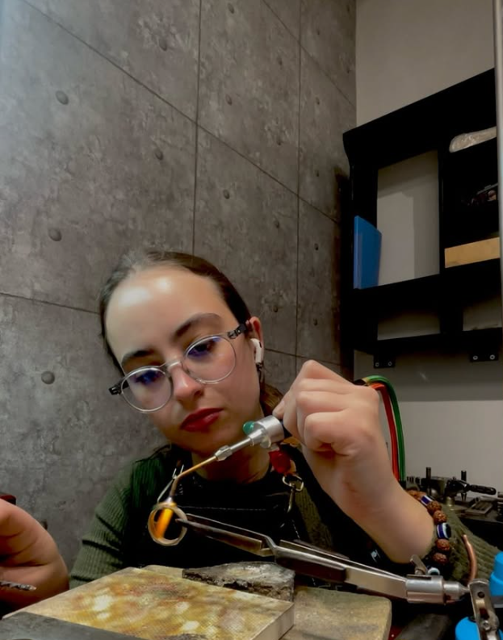
01 / At the benchThe studio note
Taryn enjoys the full rhythm of the bench: learning how a piece is made, solving practical problems and seeing careful work become a finished object.
Her work is grounded in patience, discipline and consistent practice — with a clear ambition to grow within a stronger professional workshop environment.
Selected work / 2022—present
A selection of fabrication, adornment and workshop studies, grounded in documented craft experience.



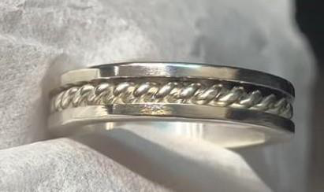
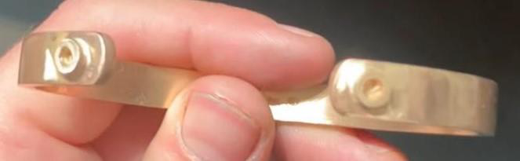
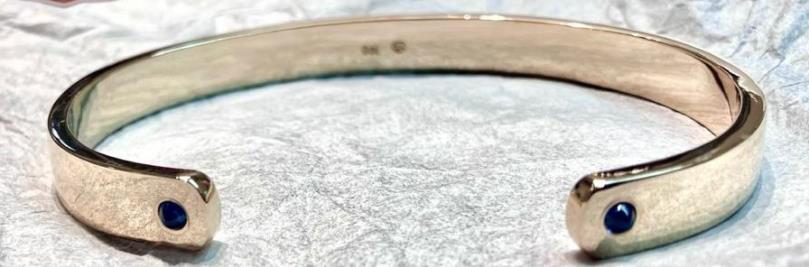
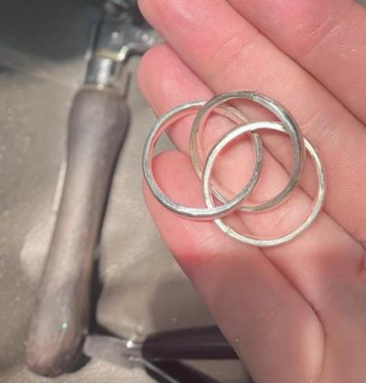
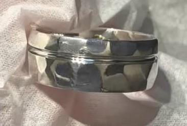
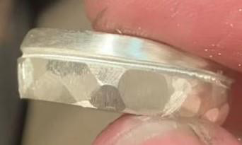
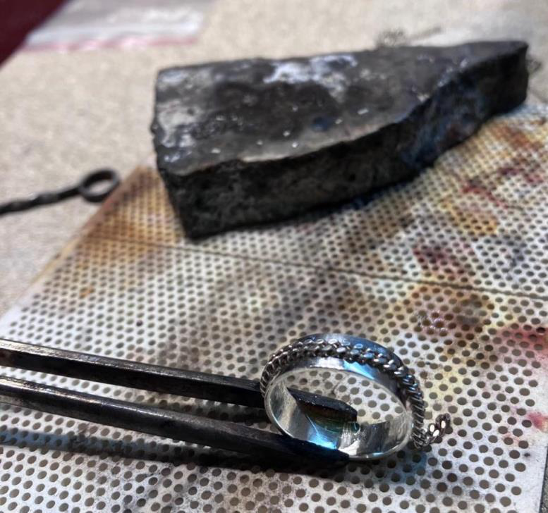
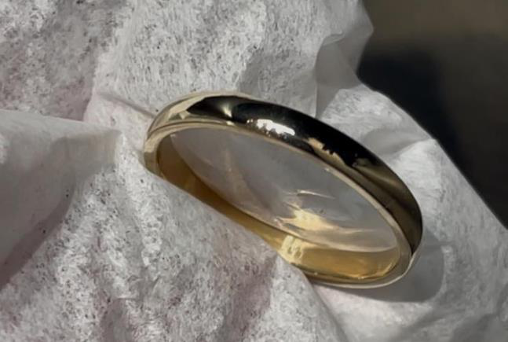
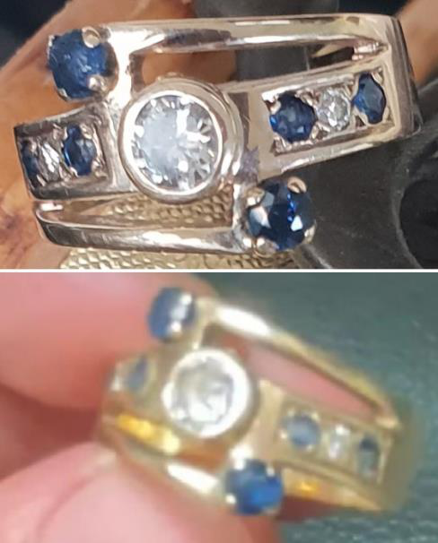
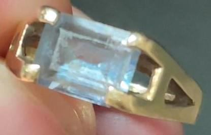
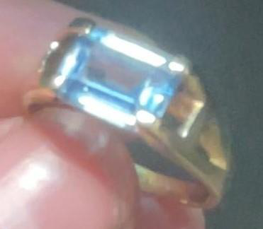
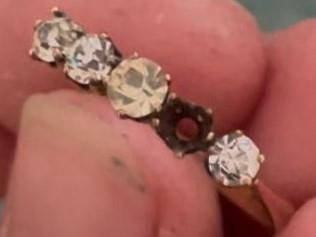
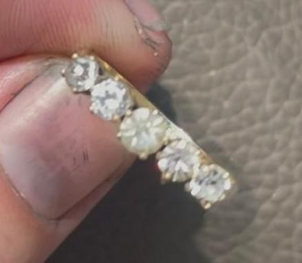
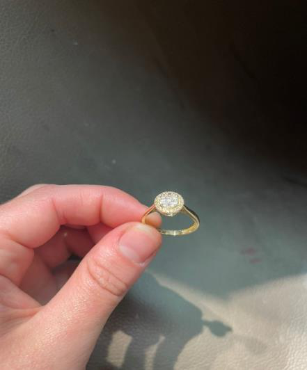
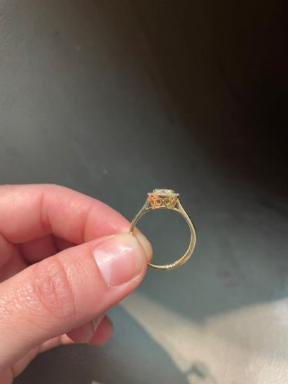
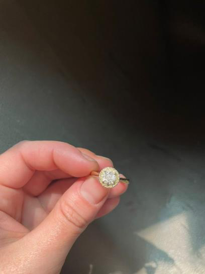
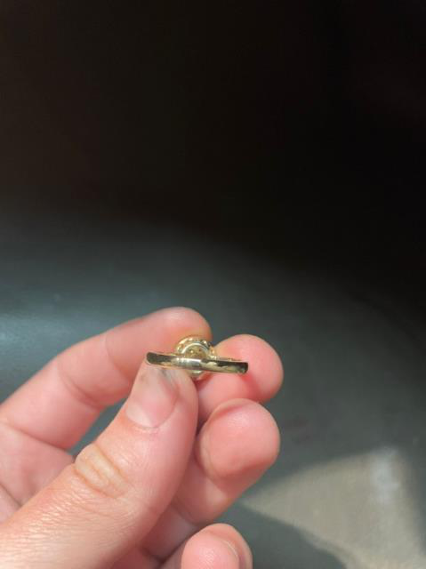
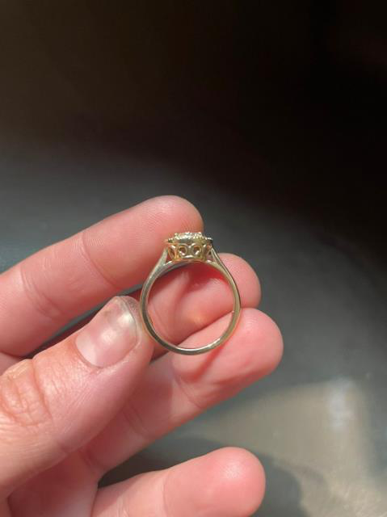
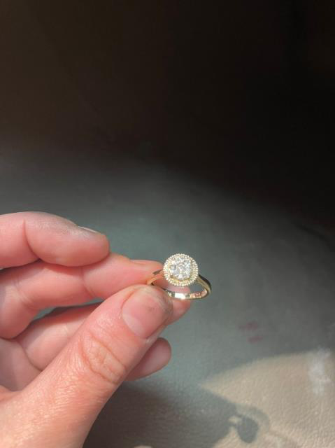
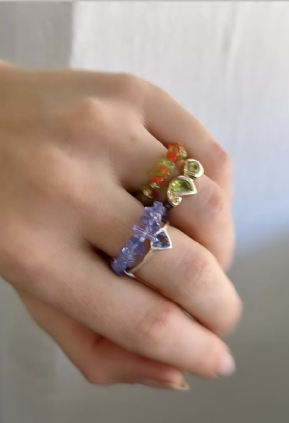
How I work
Good jewellery is not only beautiful. It is balanced, durable and made to be lived in — and every stage deserves care.
Bench work
Manufacture · repairs · restorations
Materials & services
Precious metals: brass · sterling silver · 9ct yellow and white gold · 18ct yellow and white gold · 22ct gold · extra services: watch battery replacements · strap adjustments · strap replacements
A considered next step
Taryn is looking to grow within a jewellery house, manufacturing workshop or established jeweller where she can contribute, learn better techniques and take on greater responsibility.
tarynnicola.wilson@gmail.com ↗